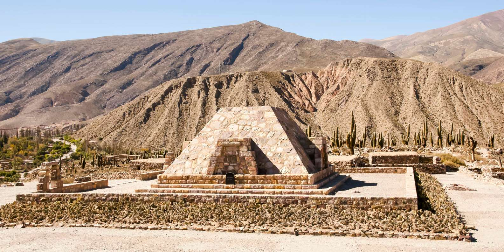
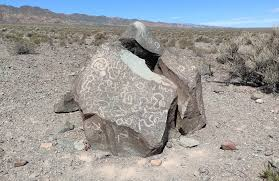
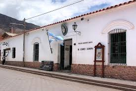
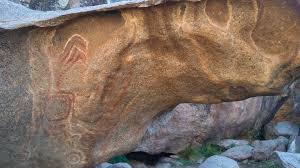
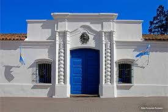

Cueva de las Manos

Cueva de las Manos
Impresionantes pinturas rupestres con manos en negativo, imágenes de guanacos y escenas de caza de hace más de 9,000 años.
Fecha estimada: 7000 a.C. – 1500 a.C.Investigación sobre los vestigios arqueológicos que revelan la historia antigua de la Pampa, la Patagonia y el Noroeste.
Más información sobre el patrimonio arqueológico de Argentina...
Impresionantes pinturas rupestres con manos en negativo, imágenes de guanacos y escenas de caza de hace más de 9,000 años.
Fecha estimada: 7000 a.C. – 1500 a.C.
Un asentamiento fortificado preincaico en la Quebrada de Humahuaca que muestra el desarrollo constructivo de las culturas andinas.
Fecha estimada: 1200 d.C. – 1450 d.C.
Grabados sobre roca con figuras de animales, signos astronómicos y símbolos de las antiguas comunidades del oeste argentino.
Fecha estimada: 2000 a.C. – 500 a.C.
Un espacio que exhibe hallazgos arqueológicos locales, incluyendo cerámica, textiles y herramientas de las sociedades andinas.
Documenta el uso humano desde 1000 a.C. hasta la época incaica.
Restos de antiguas viviendas y estructuras ceremoniales de las primeras comunidades agrícolas en el norte argentino.
Fecha estimada: 1200 a.C. – 300 a.C.
Patrimonio que conecta el pasado prehispánico con la formación de la nación, mostrando objetos y documentos de época colonial.
Siglo XVIII – XIX.